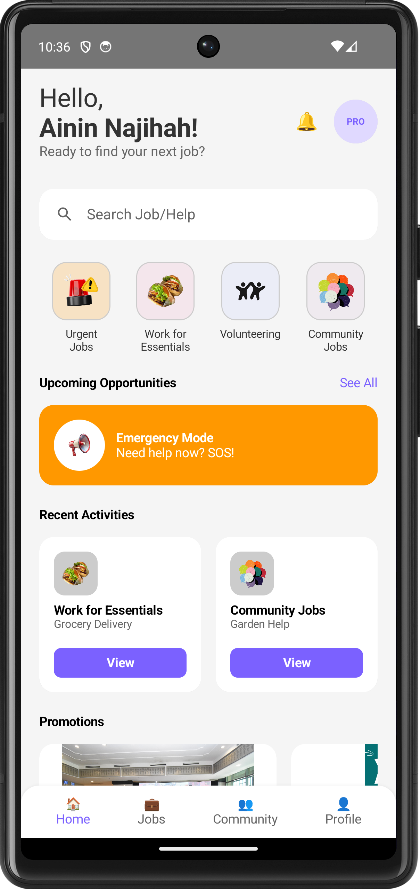

L1
Lab 1 — Basic Layout with Jetpack Compose
UI · Composable layouts, Rows, Columns & styling
Video Walkthrough
Screenshots

ComposeColumn / RowModifiers
Reflection: Lab 1 was my first real contact with Jetpack Compose, and it changed how I think about building screens. Instead of XML layouts, I described the UI declaratively with composable functions and arranged content using Column, Row, and Modifier. I learned how padding, spacing, and alignment work together, and how the live preview speeds up the design loop. This lab gave me the confidence to build the visual foundation that every later lab and my Jobsy app would stand on.